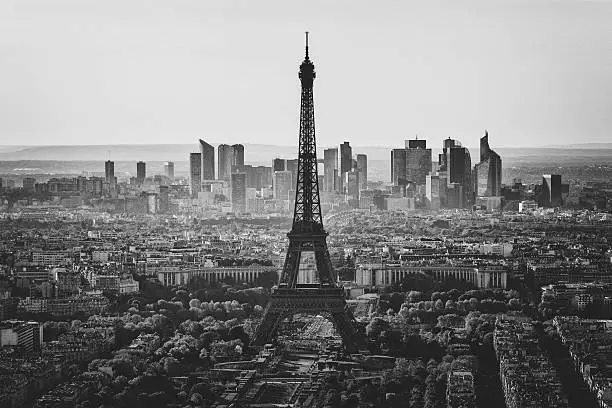

Exploring the Wonders of Paris
Paris, the City of Light, is known for its rich history, stunning architecture, and vibrant culture. From the iconic Eiffel Tower to the charming cafés lining the streets, Paris offers a truly magical experience.
Travel Tips for Visiting Paris
- Make sure to purchase tickets for major attractions in advance to avoid long lines.
- Learn a few basic French phrases to help you communicate with locals.
- Take a leisurely stroll along the Seine River for scenic views of the city.
- Visit the Louvre Museum early in the morning to avoid the crowds.
- Don't forget to try classic French dishes like croissants, escargot, and crème brûlée.